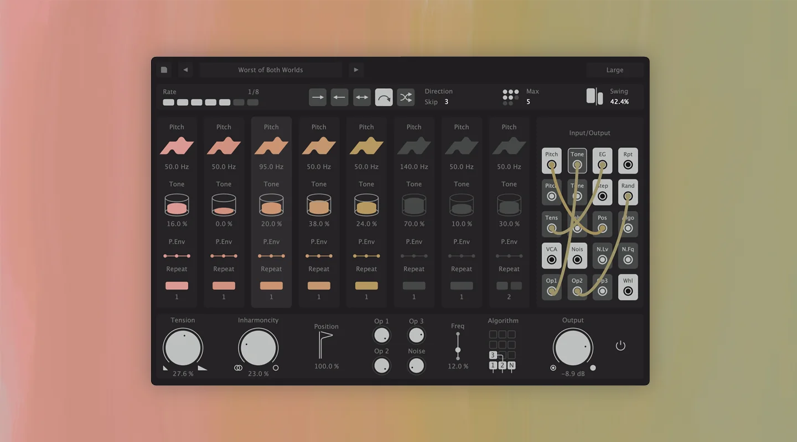
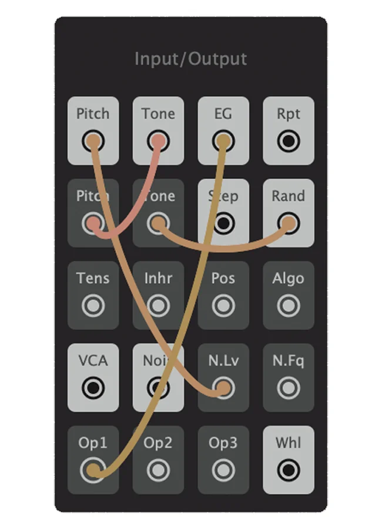

Motherly is a percussion synthesizer with an eight-step sequencer and a semi-modular patch bay. It’s a love letter to
the DFAM — though more distant, more abstract — not quite Mother, just motherly.
Its synth voice channels the character of acoustic membranes through extended FM synthesis: the snap of tension, the
rub of inharmonicity, the nuance of strike position.
The semi-modular patch bay rewards curiosity with odd destinations — feedback loops, noisy almost audio rate
modulation, and routes for external control.
Motherly features an extended FM synthesis voice with three operators and a filtered noise generator.
While designed with simple controls, it includes a dedicated section for shaping the FM algorithm, giving you deeper
control over Motherly’s synth voice. It's just as easy to dial in subtle crumpling as it is to push into overt hissing
and thumping.

The semi-modular patch bay allows endless reconfiguration of the instrument itself.
Knit gestures together by patching the pitch output into the tension input, and the step output into the tone
input.
Pull the thread of almost audio rate modulation by filtering the noise generator to control rate, then patching that
into the noise level input.
For extra fun, patch the mod-wheel output to the algorithm input, and let Motherly dictate the form beyond the eight
steps.
Minimum Requirements:
Windows: Windows 10 or 11
Mac: macOS 10.14 or newer
Demo versions have parameter saving disabled, and mute the audio every 40 seconds.
For installation, please refer to the Motherly User Guide.